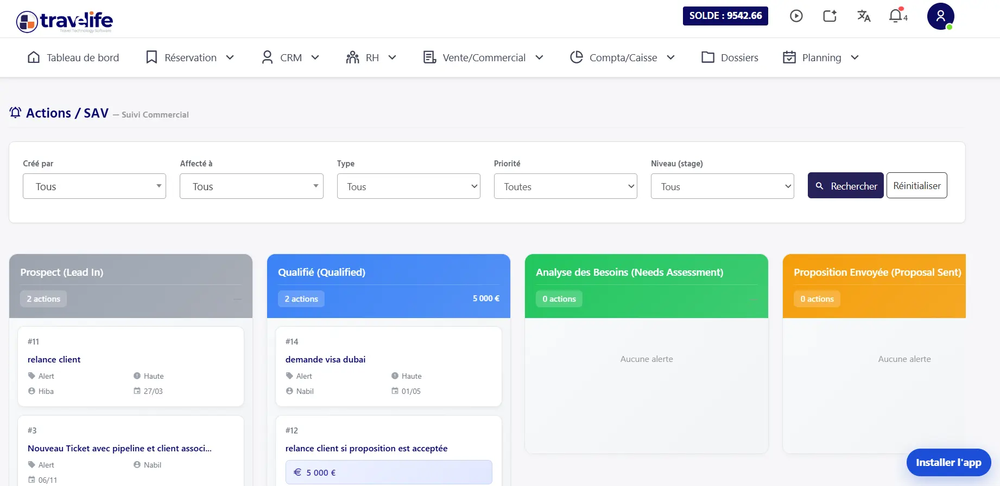
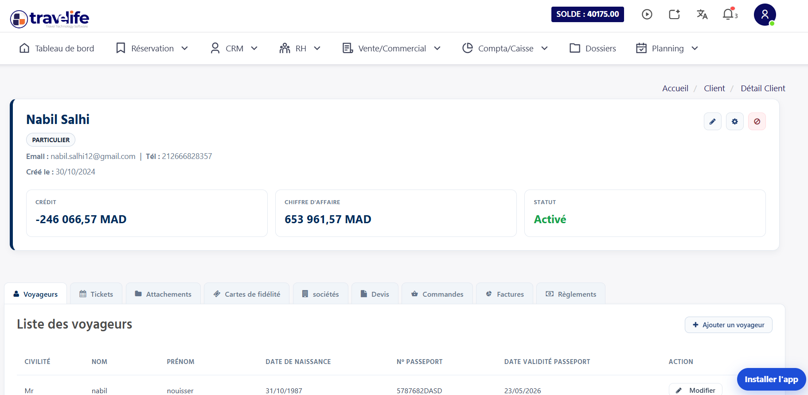
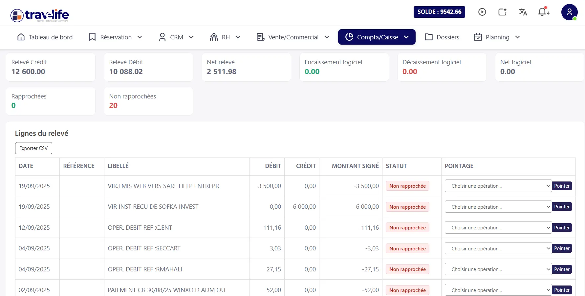
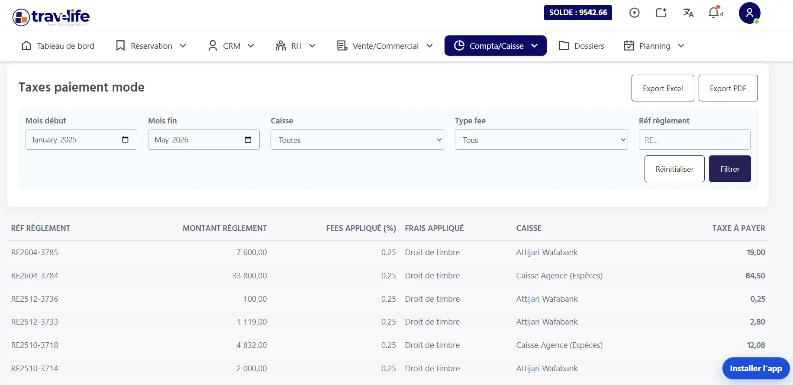
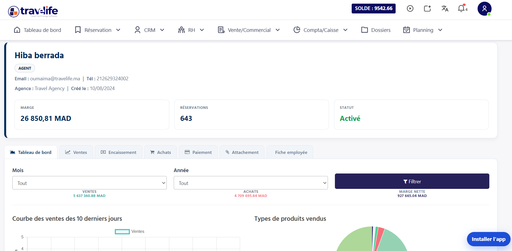
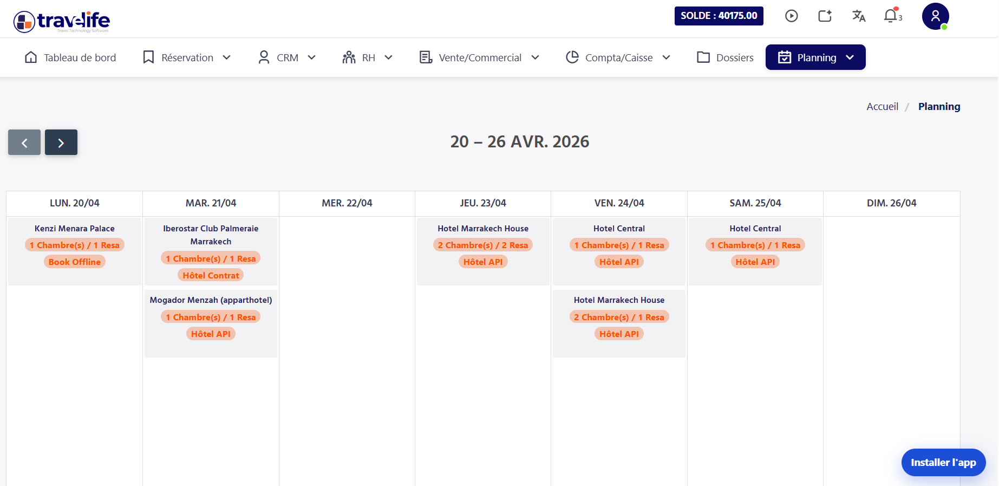

En bref : La mise à jour Travelife 2026 enrichit le logiciel ERP et CRM pour agences de voyages de six évolutions majeures : pipelines de type Kanban, journal de communication, CRM à vision 360°, outils financiers adaptés à la fiscalité marocaine, fiche agent et calendrier des allotements. Objectif : mieux piloter l’activité, sécuriser les marges et centraliser les données clients.
L’industrie du tourisme au Maroc évolue à une vitesse sans précédent. Pour accompagner cette transformation digitale et répondre aux nouvelles exigences des voyageurs, nous lançons la mise à jour Travelife 2026. Cette évolution majeure de notre logiciel ERP et CRM a été pensée spécifiquement pour les agences de voyages.
Elle optimise la gestion opérationnelle, sécurise vos marges financières et centralise vos données clients au sein d’un écosystème numérique fluide, intuitif et hautement sécurisé. De quoi garantir la pérennité de votre entreprise sur un marché de plus en plus concurrentiel.
1. Mise à jour Travelife 2026 : pilotage par pipelines
Le nouveau module Pipelines introduit un suivi visuel inédit de type Kanban. Cette fonctionnalité clé de la mise à jour Travelife 2026 transforme chaque opportunité de vente ou chaque incident fournisseur en un processus balisé, transparent et entièrement mesurable par la direction.

- Processus métier segmentés : créez des pipelines dédiés à la billetterie, aux séjours Omra, aux circuits sur mesure ou à la gestion complexe des demandes de visas.
- Ticketing avancé : ne perdez plus aucune demande. Traitez chaque sollicitation comme un ticket priorisé pour garantir un service client irréprochable.
- Optimisation du taux de conversion : identifiez les blocages en temps réel pour transformer davantage de devis en réservations fermes.
Pour aller plus loin sur ce module, consultez notre article consacré au CRM pour agence de voyage et ses pipelines.
2. Log Communication : centralisation native
La mise à jour Travelife 2026 résout définitivement le problème de la fragmentation des échanges. Grâce à un journal de communication directement lié à vos dossiers, chaque collaborateur dispose du même niveau d’information, en temps réel.
- Envoi documentaire automatisé : vos devis, vouchers et factures proforma sont expédiés en un clic avec des modèles professionnels.
- Traçabilité et sécurité : profitez d’un historique horodaté de chaque e-mail envoyé, pour une sécurité juridique totale en cas de litige.
3. CRM et intelligence data : vision 360°
Grâce à la nouvelle architecture de données de la mise à jour Travelife 2026, le profilage de vos clients devient très précis. Comprendre leurs habitudes de voyage permet de proposer des offres personnalisées qui renforcent nettement la fidélisation.
- Santé financière instantanée : visualisez le solde du client et son historique de paiement dès l’ouverture d’une fiche dossier.
- Coffre-fort numérique RGPD : stockage sécurisé des documents officiels (passeports, CIN) pour une conformité totale avec la CNDP.

4. Finance et fiscalité marocaine optimisées
La rentabilité est le moteur de votre croissance. La mise à jour Travelife 2026 intègre des outils financiers adaptés aux spécificités comptables du tourisme au Maroc.
Rapprochement bancaire

La validation des encaissements TPE et des virements reçus est simplifiée pour faciliter la réconciliation bancaire.
Gestion des taxes (TVA)

Le calcul de la TVA sur marge et des taxes de séjour est automatique, avec un export comptable simplifié.
5. Fiche agent : performance en temps réel
La mise à jour Travelife 2026 permet aux directeurs de piloter la performance individuelle grâce à des tableaux de bord dynamiques.

Suivez le volume d’affaires, les marges générées et l’efficacité de traitement de chaque collaborateur pour motiver vos équipes. Cette transparence renforce l’implication de chacun dans les objectifs globaux de l’agence.
6. Calendrier dynamique et allotements
L’interface calendrier de la mise à jour Travelife 2026 devient votre tour de contrôle. Elle permet de synchroniser les départs de groupes et la gestion critique des allotements hôteliers. Évitez le surbooking et exploitez au mieux votre inventaire disponible pour dynamiser vos ventes annuelles.

En conclusion, adopter la mise à jour Travelife 2026, c’est choisir l’excellence technologique pour propulser votre agence vers de nouveaux sommets de rentabilité au Maroc.
Vous n’êtes pas encore client de Travelife ?
Avec notre solution logicielle, profitez d’une interface ergonomique, de l’intégration des principaux GDS, de la gestion complète de la facturation et des rapports, d’un CRM intégré, d’un système de réservation B2C, d’une plateforme B2B et d’un outil de gestion commerciale performant.
Profitez d’une démonstration gratuite.
Questions fréquentes
Quelles sont les nouveautés de la mise à jour Travelife 2026 ?
La mise à jour Travelife 2026 apporte six évolutions : un module Pipelines de type Kanban pour suivre ventes et incidents, un journal de communication lié aux dossiers, un CRM à vision 360° avec coffre-fort numérique, des outils financiers (rapprochement bancaire, TVA sur marge, taxes de séjour), une fiche agent pour suivre la performance de chaque collaborateur et un calendrier dynamique des départs de groupes et des allotements hôteliers.
Le logiciel Travelife gère-t-il la TVA sur marge des agences de voyages au Maroc ?
Oui. Depuis la mise à jour 2026, Travelife calcule automatiquement la TVA sur marge ainsi que les taxes de séjour, puis propose un export comptable simplifié. Ces outils ont été conçus pour les spécificités comptables du tourisme au Maroc, aux côtés du rapprochement bancaire qui facilite la validation des encaissements TPE et des virements reçus.
À quoi sert le module Pipelines pour une agence de voyages ?
Le module Pipelines transforme chaque opportunité de vente ou incident fournisseur en un processus visuel de type Kanban. L’agence peut créer des pipelines distincts pour la billetterie, l’Omra, les circuits sur mesure ou les visas, traiter chaque demande comme un ticket priorisé et repérer les blocages en temps réel afin de convertir davantage de devis en réservations fermes.